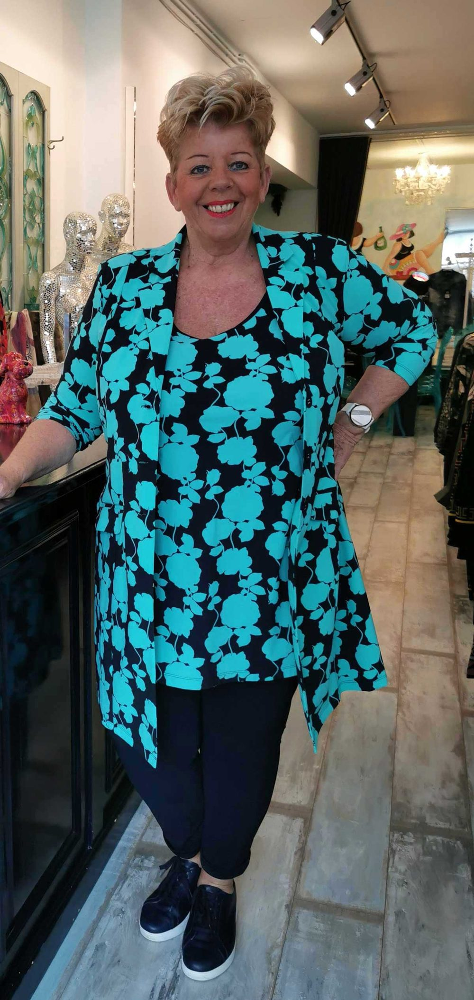
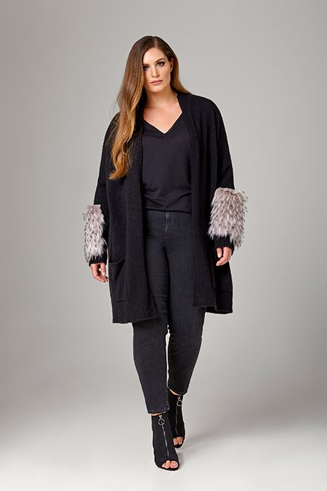
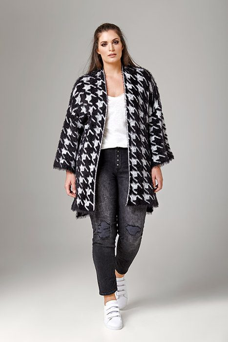
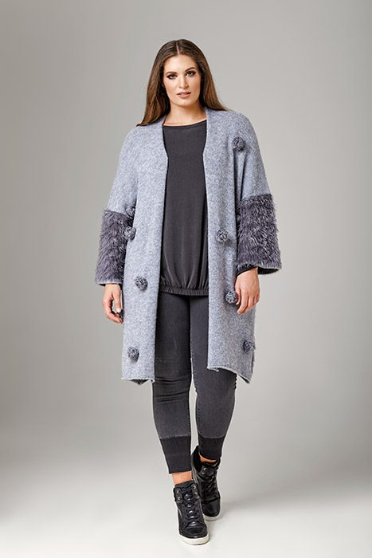
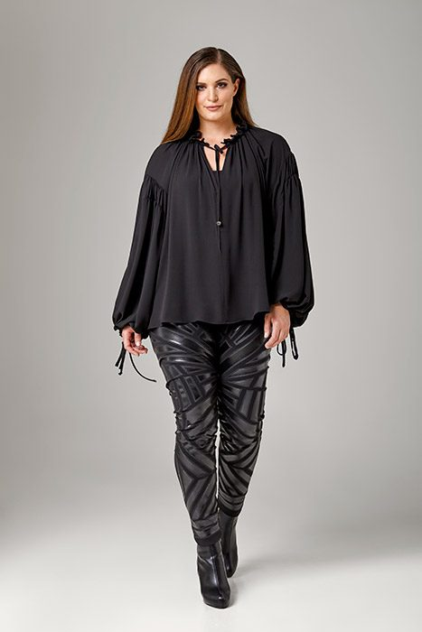
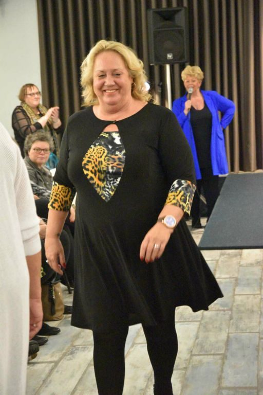
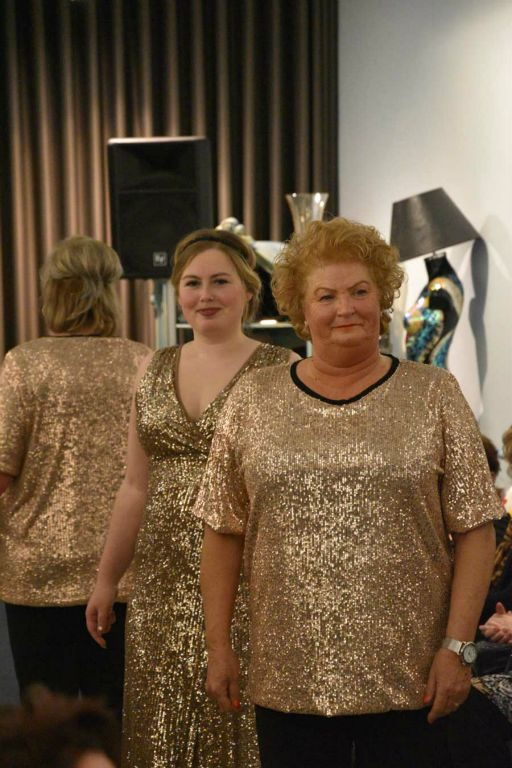
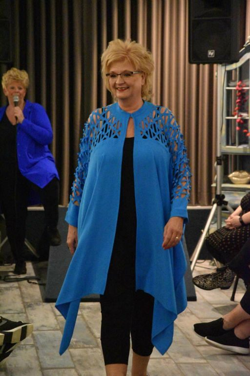
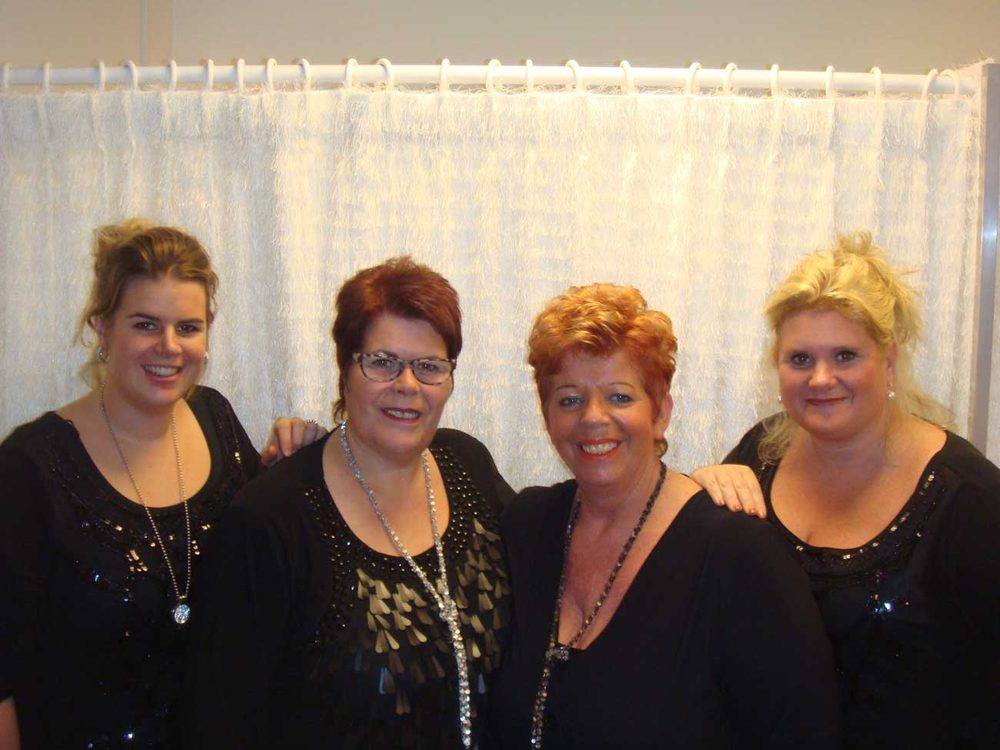

Eigenwijze dameskleding vanaf maat 42, in onze winkel aan de Kade in Roosendaal. Kom kijken, voelen en passen, de koffie staat klaar.
Super leuke winkel, GEWELDIGE kleding en een Uitstekende service. Ik wil nergens anders meer heen!!!Mandy Roos, in ons gastenboek
We hebben bewust geen webshop. Kleding moet je zien, voelen en passen.
Geen gedoe met retourzendingen. Je past het hier, met eerlijk advies erbij.
Onze prijzen liggen gemiddeld lager. En verzendkosten betaal je hier nooit.
We verrassen je wekelijks met nieuwe collecties. Er is altijd iets te ontdekken.
Gewoon gezellig binnenlopen, vrijblijvend. Kom, kijk, geniet... en vertel verder.
Real size, real woman! Merken die gemaakt zijn voor vrouwen met mooie rondingen, van basics tot een opvallend stuk.




Merken in de winkel
Accessoires en beenmode
Elk voorjaar en elk najaar laten we de nieuwe collectie zien op onze eigen modeshow. Een avond vol mode, gezelligheid en ideeën om zelf te combineren.
Neem gerust je moeder, zus of vriendin mee.



Uit ons gastenboek.
Zojuist kreeg ik de gezellige nieuwsbrief per post binnen. Heerlijk herkenbaar, zoals de nieuwsbrief is geschreven, zo is de sfeer ook vanuit jullie naar de klanten: Gastvrij, hartelijk, warm, open en eerlijk :-)
Weeral keigoed bijgepraat, Sissy je staat voor mij voor zaken doen met hart en ziel- blijft fijn!
De modeshow afgelopen vrijdag was leuk. Mijn moeder, tante en ik hebben er enorm van genoten. Ik kijk al uit naar de volgende. Ik kom van de week zeker weer langs. Kledingkast is nog steeds niet vol ;-)

Wij vrouwen met een iets groter maatje hebben gelukkig keuze uit een heleboel mooie merken. Toch blijft kleding voor een maatje meer een ondergeschoven kindje, omdat veel vrouwen niet openlijk over hun lichaam durven te praten.
Bij Sissies zijn de meeste klanten die grens allang voorbij. Wij bezitten de juiste rondingen om deze kleding te laten stralen. Accepteer jezelf en geniet ervan.
Nieuwsgierig geworden? Loop gerust eens vrijblijvend binnen en proef onze gastvrijheid en vooral onze (h)eerlijkheid.
Gewoon binnenlopen mag altijd. Bellen of mailen kan natuurlijk ook.
| Maandag | gesloten |
| Dinsdag t/m zaterdag | 10.00 - 17.00 |